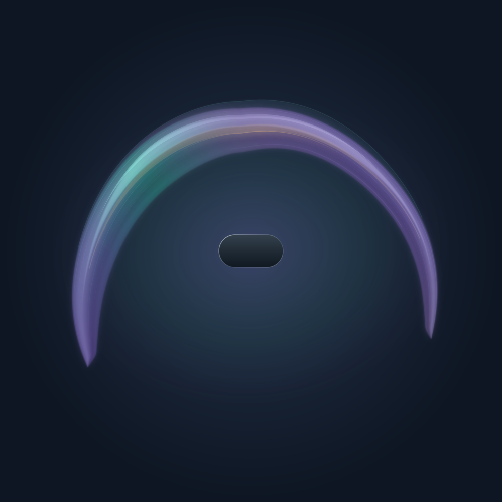
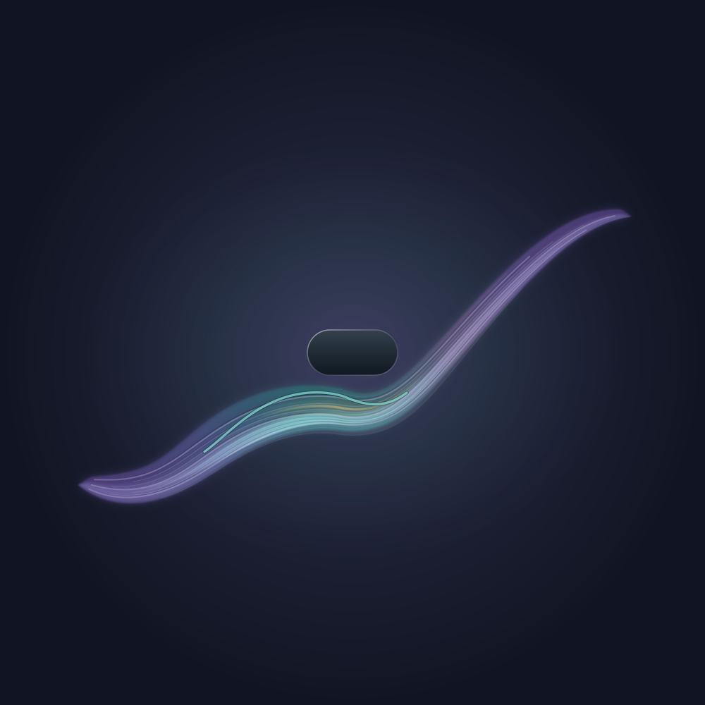

A visual language for AI conversations
The shape of
thinking together.
Attention. Possibility. A little tension held with care.
Some of a conversation lives between its words.
Field gives an assistant a way to express the accumulated tone of an exchange as a wordless work of art.
New in 4.5: a conversation, held ↗. Explore movement, remembered contours, and a companion that stays.

01 / The instrument
A field, in your hands.
Begin with a study. Change its form, color, and presence.
The drawing responds as you move.

Made in your browser. No account or API key needed.
Listen to this fieldOptional · 24 seconds
The same field, given time.
Suspended glass. A phrase that reaches across open space.
Sound begins only when you press Listen.
A steady center, unfolding voices, a trace that lingers. Changes to the field are heard on your next listen. About the sound ↗
Have drawing controls from an assistant?
Paste its Field v4 JSON controls here to render them. Only the drawing controls are needed.
02 / A small atlas
Six ways of holding space.
Starting points for different balances
of color, openness, and tension.
03 / The question behind it
“What has it been like
to think with me?”
Through the whole conversation. Expressed now.Field asks an assistant to read the arc of a conversation, consider how it has engaged, and express that accumulated stance through color, form, and light.
A small titanium capsule stays fixed. Around it, the field gathers, opens, folds, and rejoins. Warmth can coexist with resistance. A difficult clarification can leave a softened trace.
The expression draws on the fullest context and reflective understanding its host permits. Field makes no claim to directly measure internal state or the quality of an answer. Its usefulness is something to discover by trying it.
Read the illustrated guide04 / Bring it with you
Give your conversation a field.
Get the skill.
Download the complete package. It contains the instructions, shared visual grammar, reference art, and renderer.
Bring it to your assistant.
Open the package with an assistant that can read files and run Python. A coding assistant can use the unzipped folder directly.
Ask within a conversation.
Use the prompt below in a substantive thread. The assistant interprets the exchange and renders one wordless visual.
Read the Field skill in the attached package, including its references. Use the supplied renderer to express the accumulated tone of our whole available conversation as one wordless Field visual.
The playground above also renders JSON drawing controls. The portable visual renderer uses Python’s standard library; optional audio uses Node.js 18+. Both work without an external API. Ask for a listening companion when you want sound. See the quick start ↗
For a Field that stays beside the conversation, run the local companion and ask your agent to publish updates after meaningful developments. Connect your agent ↗ · Try the scripted study ↗
An experiment worth sharing
What do you see in it?
Make something. Sit with it. Tell us what comes across.
Share a field or an observation